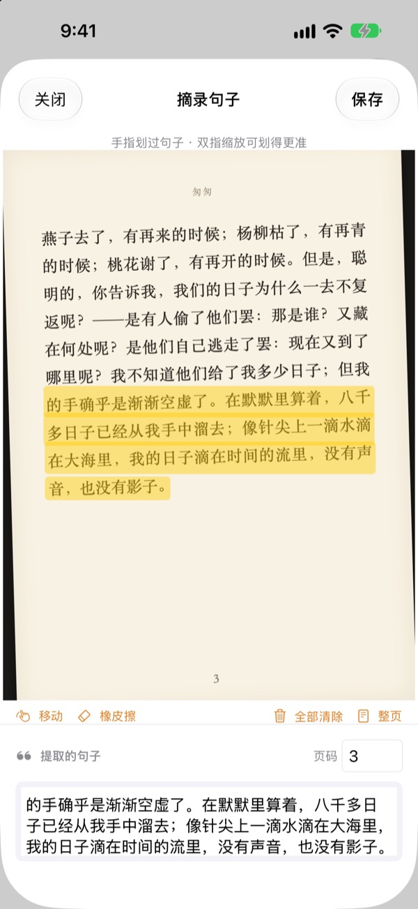
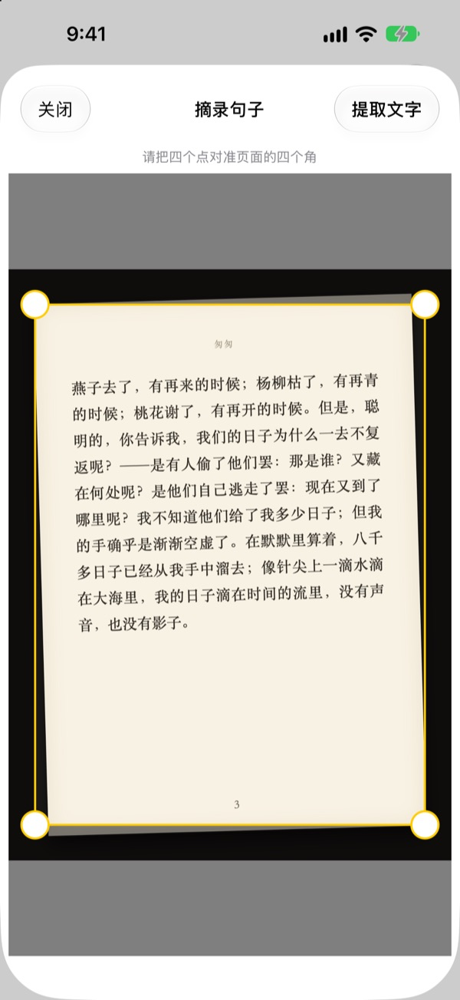
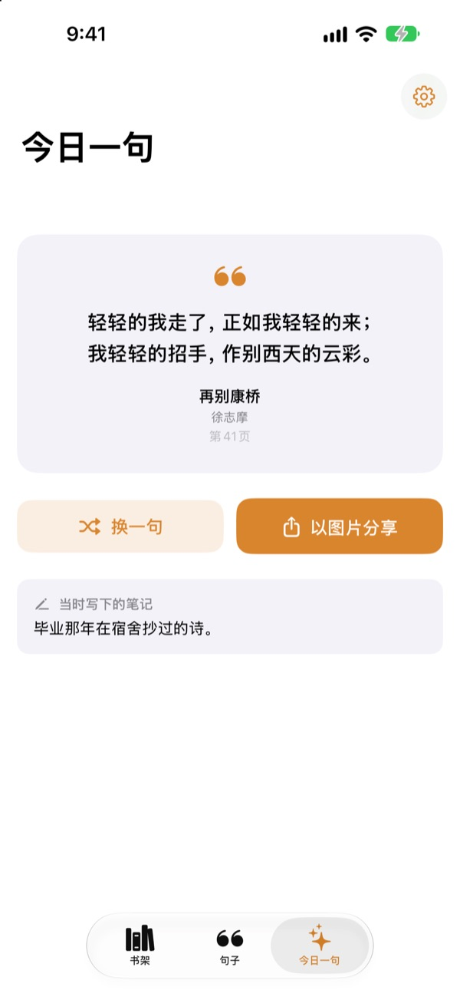

划一下试试
用手指或鼠标在下面这页的任意句子上划过，只有划到的字会出现在卡片上。
读到的好句子，最后都去哪了？
图书馆借的书不能写写画画。拍下的书页照片，转眼就淹没在几千张相册照片里。打进备忘录吧，书名和页码又常常漏掉。用划线，拍一下、划一下，句子、书名和页码就都留下了。
拍歪了，也能变平整
拍下书页后对准四个角，斜着拍的照片也会被拉平，像一张纸一样端正。字越清晰，识别越准确。
相册里已有的照片也能用。

所有摘录，集中一处
书以封面排列在书架上，句子汇成一个列表。可以按句子、笔记或书名搜索，想再读的句子点个爱心。
拍一张封面就能添加书籍，自动读取书名和作者；拍到封底条形码，ISBN 也会填好。
与遗忘的句子重逢
今日一句每天从你的摘录中挑出一句，连同当时写下的笔记一起送到你面前。用小组件把它放在主屏幕或锁定屏幕上。
喜欢的话，还能做成纸张质感的卡片图片分享出去。

三步上手
- 1
拍封面
自动填好书名和作者，保存前可以修改。
- 2
拍书页
对准四个角，页面就会变平整。
- 3
划句子
自动找到页码，一起保存。
划线界面的操作
- 手指划过
- 只选中划到的字
- 双指缩放
- 放大后划得更准
- 移动
- 拖动放大后的页面
- 橡皮擦
- 把划过的字取消选中
- 全部清除
- 取消所有已选的字
- 整页
- 保留整页文字
- 页码栏
- 显示识别到的页码，可以修改
使用 VoiceOver 时，连按两次某一行即可添加或移除。
所有功能免费
免费
- 拍封面添加书籍，扫条形码读取 ISBN
- 书页校正与手指划线
- 自动识别页码
- 书架、句子搜索与收藏
- 今日一句及主屏幕、锁定屏幕小组件
- 生成卡片图片分享
- iCloud 同步
支持开发者
- 愿意的话，可以在设置里打赏一点心意
- 打赏不会解锁任何功能，打不打赏，应用都一样
没有广告，没有订阅。
常见问题
照片或摘录会被发送到别处吗？
不会。文字识别通过 Apple Vision 全部在设备上完成，照片和摘录不会发送到服务器，离线也能使用。详情请参阅下方的隐私政策。
可以识别哪些语言的书？
文字识别由设备上的 iOS 完成。可以识别中文、英语、日语、韩语、俄语以及大多数西欧语言的书；在较新的 iOS 版本上，还支持泰语、越南语、土耳其语、印尼语、波兰语、捷克语、荷兰语和北欧语言。目前还无法识别希腊语。
怎样只选中想要的句子？
拍下书页后，像用荧光笔一样，用手指在句子上划过，就只会选中那些字。双指放大可以划得更精确。另外还有“橡皮擦”“全部清除”和“整页”。
书名或作者识别错了。
封面识别是根据字体大小来判断的，遇到设计感很强的封面可能会认错。保存书籍前，可以修改书名和作者。
页码不对。
页码是从照片边缘的数字读取的。保存前在页码栏里改过来就好。
能在多台设备上看到摘录吗？
可以。只要用同一个 Apple 账户登录 iCloud 并打开 iCloud 云盘，书籍和摘录就会自动同步。
怎样添加小组件？
在主屏幕上长按，轻点“编辑”>“添加小组件”，然后选择“划线”。锁定屏幕则长按后轻点“自定”。今日一句就会显示在那里。
相机无法使用。
请在“设置”›“划线”中确认已允许访问相机和照片。拍照需要在 iPhone 真机上进行。
需要什么条件？
一台装有 iOS 17.0 或更高版本的 iPhone。
怎么联系你们？
可以在应用的设置（齿轮）页面发送反馈，或发邮件到下方地址。我们通常会在两三天内回复。
有问题或建议？欢迎写信至 leeo@kakao.com。